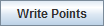

The drawing controls consists of a drawing editor that supports polygons, lines, shapes and text. This tool allows for creating and moving graphics in the Main Display window. Drawing and selecting in 3D can be difficult and sometimes it is best to be in the main overhead view. This feature can be found in the Main Display window in the Display->Draw Freely menu item.
The Drawing Control window consists of three tabs: Controls, Style, and Shapes.
The Controls tab is used to draw features in the Main Display window:
Image 1: Controls Tab of the Drawing Control Dialog
- Mode - There are three editing modes; Select, Move and Reshape:
-
 Select - Selects one or more drawing objects. To select multiples press the Control key. The selected objects will be shown with small magenta rectangles. Once selected, the object's property editor can be opened by pressing Ctrl+P. Objects can also be deleted by pressing Ctrl+X. All of the objects can be selected by pressing Ctrl+A.
Select - Selects one or more drawing objects. To select multiples press the Control key. The selected objects will be shown with small magenta rectangles. Once selected, the object's property editor can be opened by pressing Ctrl+P. Objects can also be deleted by pressing Ctrl+X. All of the objects can be selected by pressing Ctrl+A. -
 Move - Activates and moves the active object (the object with pink squares at its corners/along the line). Do this by left-clicking and dragging the object.
Move - Activates and moves the active object (the object with pink squares at its corners/along the line). Do this by left-clicking and dragging the object. -
 Reshape - Stretches an object drawn in the Main Display. To use this, left-click and drag on a pink square of an active object. As this point is moved, other points in the object will move as well to keep the object smooth.
Reshape - Stretches an object drawn in the Main Display. To use this, left-click and drag on a pink square of an active object. As this point is moved, other points in the object will move as well to keep the object smooth. - Enabled - Turns on/off the ability to use the modes. This makes it easy to modify other objects that may be in the Main Display window without moving the position of the shapes.
- Shapes - Sets the shapes to be drawn in the Main Display window. Utilize the Style tab of the Drawing Control to specify line/text color, thickness, size, and other items pertinent to the shape. To use this feature, select the shape to draw, and left-click and drag in the Main Display to draw the shape. See the Properties Editor of the shapes for further customization after an item has been drawn:
 Create a polygon - Creates a smooth polygon.
Create a polygon - Creates a smooth polygon. Create a rectangle - Creates a rectangle.
Create a rectangle - Creates a rectangle. Create a diamond - Creates a diamond.
Create a diamond - Creates a diamond. Create an arrow - Creates an arrow that can face in any direction.
Create an arrow - Creates an arrow that can face in any direction. Create a horizontal arrow - Creates an arrow in the horizontal direction.
Create a horizontal arrow - Creates an arrow in the horizontal direction. Create a vertical arrow - Creates an arrow in the vertical direction.
Create a vertical arrow - Creates an arrow in the vertical direction.-
 Create text - Opens a Text entry window, where the user can type in text or HTML. Click OK when done, and the text will appear in the Main Display window.
Create text - Opens a Text entry window, where the user can type in text or HTML. Click OK when done, and the text will appear in the Main Display window. -
 Create waypoint - Opens a Text entry window, where the user can type in text or HTML. Click OK when done, and the text will appear in the Main Display window along with a marker to represent the exact location that was clicked in the Main Display window.
Create waypoint - Opens a Text entry window, where the user can type in text or HTML. Click OK when done, and the text will appear in the Main Display window along with a marker to represent the exact location that was clicked in the Main Display window. - Create image - Places a saved image or an image from an HTML address on the Main Display window. Select an image file from the file chooser or enter a URL. When using this shape, you can use the Full Lat/Lon option next to Coordinates. This controls how the corners of the image are positioned. If you are adding a large image and you want to display the full image right away without having to stretch it, check this option. Otherwise, your image will be compressed in the horizontal.
-
 Create quicktime movie - Places a movie on the Main Display window. Select the movie from the file chooser or enter a URL. This can only work with certain types of Quicktime (*.mov) files.
Create quicktime movie - Places a movie on the Main Display window. Select the movie from the file chooser or enter a URL. This can only work with certain types of Quicktime (*.mov) files. -
 Create a symbol - Places a cross (+) symbol on the display. This symbol can be changed in the Properties Editor of the shape. You can get to this through the Shapes tab of the Drawing Control and double-clicking on the item. Use the Symbol button to change the symbol to a variety of meteorological symbols including various types of weather conditions, clouds, and turbulence.
Create a symbol - Places a cross (+) symbol on the display. This symbol can be changed in the Properties Editor of the shape. You can get to this through the Shapes tab of the Drawing Control and double-clicking on the item. Use the Symbol button to change the symbol to a variety of meteorological symbols including various types of weather conditions, clouds, and turbulence. - Create high pressure symbol - Adds a high pressure symbol to the Main Display window with a user-specified pressure.
 Create low pressure symbol - Adds a low pressure symbol to the Main Display window with a user-specified pressure.
Create low pressure symbol - Adds a low pressure symbol to the Main Display window with a user-specified pressure.- Create a cold front - Adds a cold front to the display.
 Create a warm front - Adds a warm front to the display.
Create a warm front - Adds a warm front to the display.- Create an occluded front - Adds an occluded front to the display.
- Create a stationary front - Adds a stationary front to the display.
- Create a trough - Adds a trough to the display.
- Filled - Fills in the outline of a shape. This can be used with the Polygon, Front, and Rectangle shapes.
- Straight - Creates straight lines when drawing freely. This can be used with the Polygon and Front shapes.
- While the icon buttons only allow you to draw 5 different front types, there are 20+ front types to choose from in the Properties dialog for the shape.
- Coordinates - Draws in four different coordinate systems. This affects how the Points tab of the Properties Editor for the item will be formatted. Ex: If you select X/Y, your points will list out in columns with values of X and Y, and if you choose Lat/Lon, your points will list out in columns with values of Latitude and Longitude:
- X/Y/Z - Draws in the 3D box coordinate space. Re-projections will not affect the shape.
- X/Y - Draws in the 3D box coordinate space, fixing the Z position. Re-projections will not affect the shape.
- Lat/Lon/Alt - Defines the points of the shapes by Latitude/Longitude/Altitude. When you reproject the display the shape will also be reprojected.
- Lat/Lon - Defines the points of shapes by Latitude/Longitude, but the Z position is fixed using the Z Position slider. When you reproject the display the shape will also be reprojected.
- Z Position - Changes the vertical position of the features with respect to other variables being displayed in the Main Display window. You can change this with the slider, or by entering a value in the text field and pressing Enter.
- Time - Determines the visibility of your drawing items as you progress through time steps in a loop.
- Draw In Current Time - Draws the features only on the time step you are looking at. As you step through the animation, the features will not be visible in any subsequent time steps.
- Show All - Displays all of the features drawn at any time step, regardless of if Draw In Current Time was selected.
- A graphic can be shown at more than one time using the Properties Editor. Select the object and press Ctrl+P to bring up the Properties Editor. Select the times to be displayed in in the Times list (Shift+click or Ctrl+click to select multiples) and press Apply or Ok.
The Style tab controls the style that the drawings take in the Main Display window:
Image 2: Style Tab of the Drawing Control Dialog
These menu options apply to the shapes listed in the Controls tab, excluding the High/Low pressures/fronts. Once modifications have been made in this tab, they will be applied to the next shape you make in the Main Display window, without changing any shapes already created.
- Color - Sets the color of the shape/text in the display.
- Line Width - Sets the thickness of the shapes in the display. This Line Width control sets the thickness of arrows, polygons, rectangles, and diamonds. This does not control the line width of fronts. The default value is 1.0.
- Font - Sets the font of the text in the display.
- Size - Sets the size of the text in the display.
- Justification - Sets the placement of the shape with respect to the latitude/longitude location where you clicked in the Main Display window to draw the shape. The first dropdown controls the left/right justification, and the second dropdown controls the top/bottom justification. Ex.: To center an item directly where you click in the Main Display window, choose Center, Center.
- Front Scale - Sets the scale of the fronts. A larger value will make the front thicker, and you may see fewer details about the front (ex. Fewer blue triangles along a cold front). This works similarly to Line Width, but for fronts instead of shapes. The default value is 1.0.
The Shapes tab lists all of the graphical elements:
Image 3: Shapes Tab of the Drawing Control Dialog
This tab lists out the different shapes drawn in the Main Display window from the Controls tab, as well as other information about them.
- Name - Lists the names of the shapes currently drawn in the Main Display.
- Type - Lists the type of shape in the display (ex. Front, Low, High, Shape, Smooth Polygon).
- Coordinates - Lists the Coordinates selected in the Controls tab.
- Properties - Lists properties about some of the items, including pressure, area, and distance values.
Double-clicking on an element in the Shapes tab will open its Properties Editor, which consists of two tabs: Properties and Points.
The Properties tab gives general information about each shape:
Image 4: Properties Tab of the Properties Dialog
This tab allows you to control many aspects of the individual shapes. After making any modifications to this window, click Apply or OK, and the changes will be applied to the shape in the Main Display window. When editing the properties of a High or Low shape, there is the ability to change these shapes to 'A' (Spanish 'Alto' for High) or 'B' (Spanish 'Bajo' for Low). Note: The different types of shapes will have different menu options.
- Line Width - Sets the thickness of the shapes being displayed.
- Name - Sets the name of the shape. This is the name that will be listed in the Name column of the Shapes tab of the Drawing Control window. Setting names of items can make it easier to keep multiple shapes organized, as opposed to the default of "Glyph1", "Glyph 2", etc.
- Visible - Determines if the shape will be visible in the display. If this item is unchecked, it will not be visible in the Main Display, but the shape itself will not be deleted. Any shapes that aren't visible will have '(hidden)' listed next to their names in the Shapes tab of the Drawing Control window.
- Color - Sets the color of the shape in the display.
- Distance - Lists the distance the object covers in the Main Display window. This cannot be changed here, and is listed for informative purposes only. The Distance will also be listed out in the fourth column of the Shapes tab of the Drawing Control window.
- Area - Represents the area of a shape being displayed in the Main Display window. This cannot be changed here, and is listed for informative purposes only. The Area will also be listed out in the fourth column of the Shapes tab of the Drawing Control window.
- Pressure - Sets the pressure when your shape is a high or low pressure.
- Front Type - Changes the type of front displayed for the selected element. There are a variety of fronts available from this control that are not available in the Controls tab of the Drawing Control window.
- Flip the front orientation - Changes the display to represent the front traveling in the opposite direction (i.e., what side the cold front the blue triangles are drawn on).
- Scale - Changes the size of the item (ex. front) without changing its spatial extent.
- Text - Allows you to view the current text of the item and change it. You can also change the Font, Size, and Alignment with respect to the lat/lon where you clicked to create the text.
- Marker - Allows you to add a marker for the originating point of a text display.
- BG Color - Allows you to set a background color for text.
- Times - Determines what times the shape will appear when you are displaying a loop of data. You can specify which times the item will be visible by selecting individual times with Control/Shift+click. This menu item will only be used if you have a loop of data displayed.
 - Opens the Flythrough feature which allows you to interactively explore the feature.
- Opens the Flythrough feature which allows you to interactively explore the feature.
The Points tab gives general information about each shape:
Image 5: Points Tab of the Properties Dialog
This tab lists out location coordinates of your shape. The points listed can be seen in the Main Display window, and are represented by the pink squares along the boundaries of the shape. These values can be changed by double clicking on a coordinate, and typing in a new value. Once you click on a different coordinate, and then press Apply or OK, the change will be made in the Main Display window.
- Latitude/Longitude - Lists the latitude/longitude values at a variety of points in the shape. If your properties are for a rectangle, the points listed will be the four corner points. If your properties are for a line (including a front), you will see several latitude/longitude points along the length of the line.
-  - Saves the list of points as a Comma-Separated Values (CSV) file (*.csv) or as an Excel file. This file can subsequently be loaded in through the General->Files/Directories chooser of the Data Sources tab of the Data Explorer and the points can be used to create a Point Data display.
Many of the menu items seen utilizing this display are standard options that can be found in the Menus section of the Layer Controls page. However, there are several options that are unique to this display.
The File menu has these unique options:
- Export Drawing - Exports all drawings created from the Drawing Control in the IDV Drawing files (*.xgrf) format. This file can later be loaded into McIDAS-V in two ways. First, you can load the file through the General->Files/Directories chooser of the Data Sources tab of the Data Explorer with the Drawing Files Data Type. This will display your saved drawings in the Main Display window with controls similar to the Shapes tab of the original Drawing Control window. Secondly, you can import this file through the File->Import Drawing menu item of the Drawing Controls window.
- When exporting your drawing, there is a checkbox in the Save window called Load as map data. If you select this option, when your data is saved, a new layer will also be added to the Field Selector tab of the Data Explorer. This layer will be the drawing you saved loaded in as a map layer. This enables you to do a variety of things. First, you can create a simple Map Display of your data with the Map Display display type in the Field Selector. Secondly, if you load in a topography field (ex. GFS Global 'Geopotential_height @ surface' data), you can create a 3D map over topography using the Maps->3D Map native formula. For the MapData field, select your exported drawing, and for Topography, select your topography field. You must make sure that your topography field is large enough to cover the entire domain of your map layer (your drawing).
- Import Drawing - Imports files in the IDV Drawing files (*.xgrf) format. These files contain previously drawn shapes created from the Drawing Controls.
The Edit menu has these unique options:
- Remove All - Removes any drawings from the Main Display window without removing any other items. While all drawings will be removed, the Drawing Control will remain open.
- Apply Color to Selected - Changes the color of the selected item drawn in the Main Display window. After an item is drawn, if you want to change its color in the Main Display, you can make the item active with the Select mode, change the Color in the Style tab of the Drawing Control window, and use the Apply Color to Selected menu item to change the color of the item to the new color you selected.
- Apply Z Position to Selected - Applies a modified Z-position (height) to the selected item drawn in the Main Display window. After an item is drawn, if you want to change its vertical positioning in the Main Display, you can make the item active with the Select mode, move the Z-Position slier in the Controls tab of the Drawing Controls to your new desired position, and use the Apply Z Position to Selected menu item to move the item to the new Z-position.